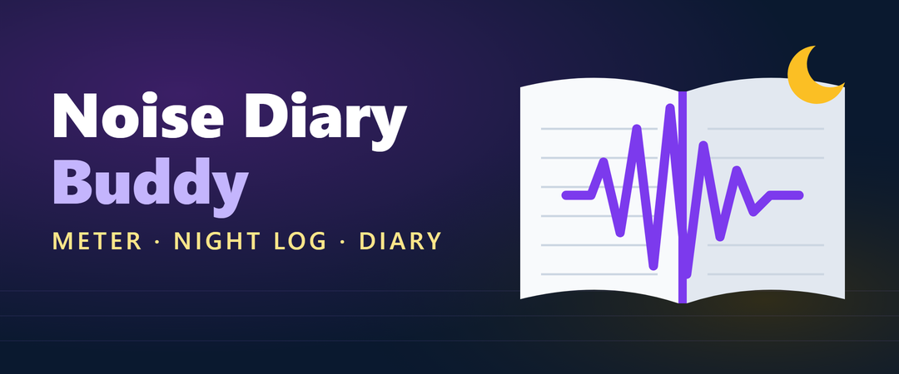
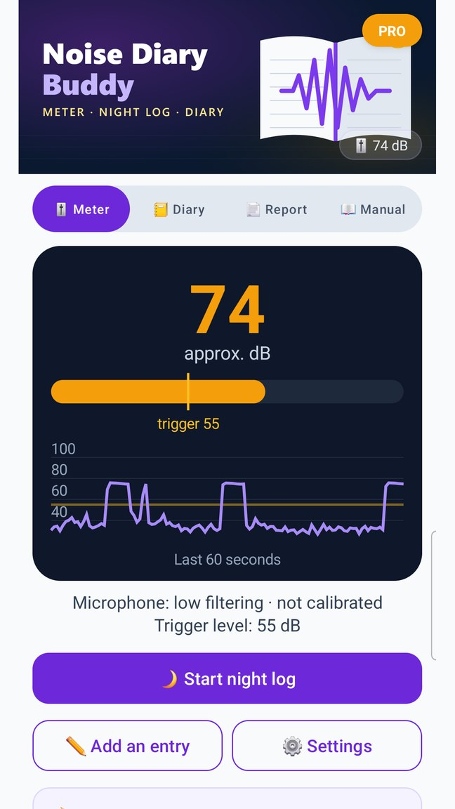
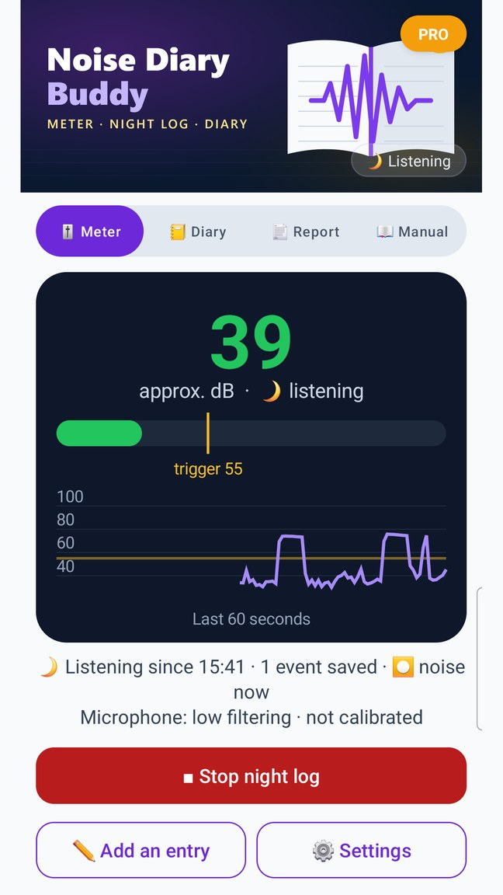
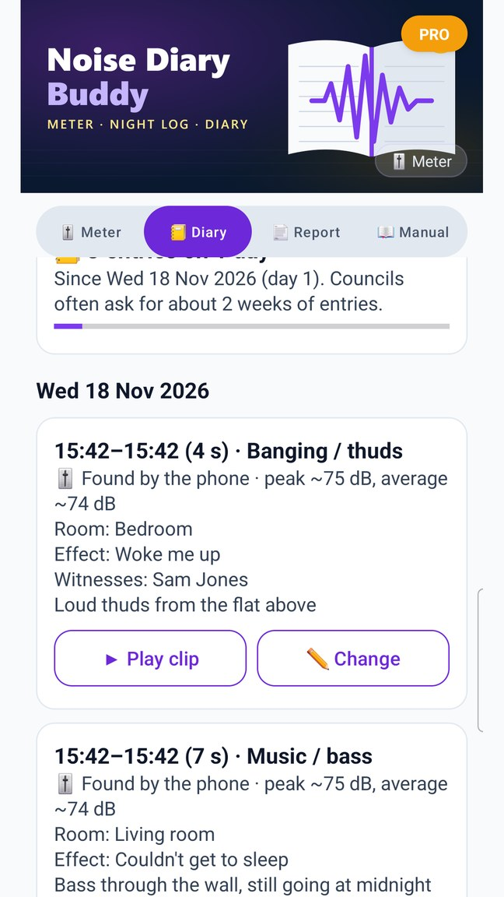
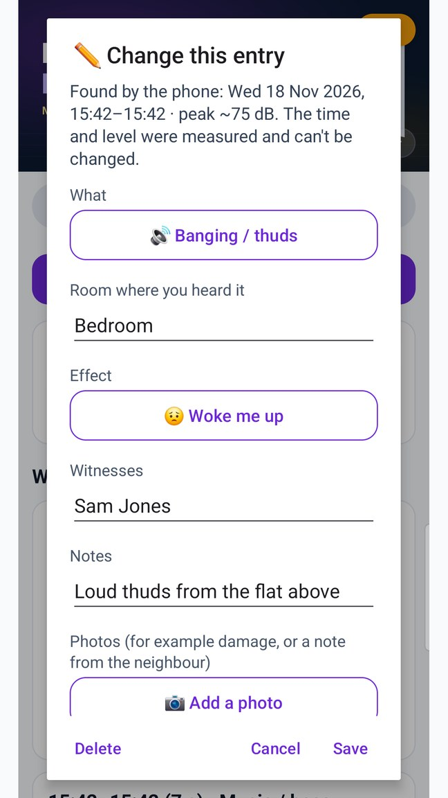
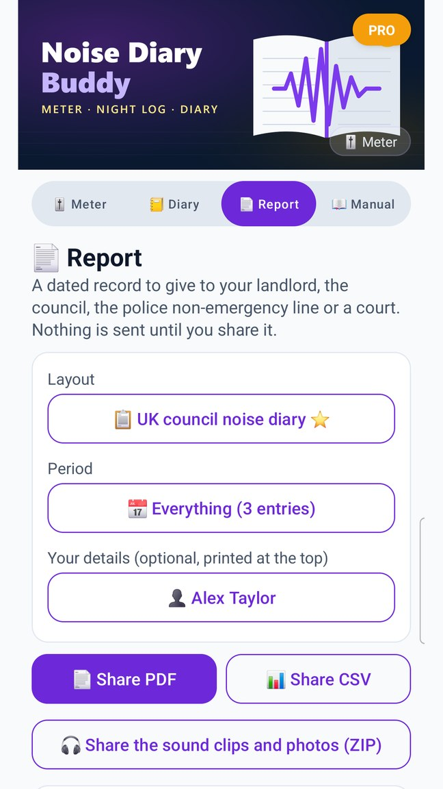
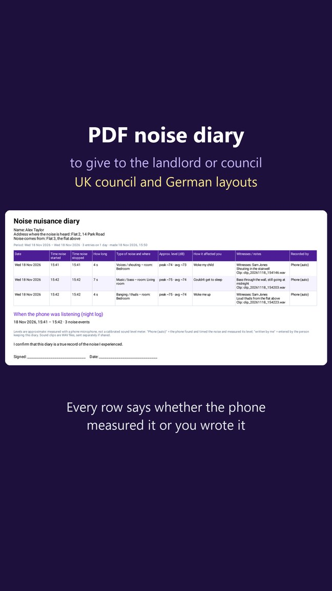

🌍 International version

Everything below is the same text as the Manual in the app (📖 Manual tab).
Noise Diary Buddy helps you keep a noise diary: a dated record of noise that disturbs you at home. Landlords, housing associations, councils and courts usually ask for one before they can act.
The phone measures the noise for you at night (time, length and level, with short sound clips), and you add what only you know: what the noise was, which room you heard it in, how it affected you and who else heard it. Then you share the diary as a PDF.
No sign-in and no ads. Everything stays on this phone until you share it yourself.
The Meter tab shows how loud it is now in big numbers, a coloured bar and a graph of the last 60 seconds. The yellow line is your trigger level.
The number is in approximate dB. Phone microphones are not calibrated sound level meters, and every phone hears a little differently, so treat the number as a guide. What matters most in a diary is that the same phone measures every night, so nights can be compared.
Under the meter it says which microphone setting the phone uses: "unfiltered" (best: low thuds and bass aren't removed), "low filtering" or "standard". The app picks the best one your phone offers.
The meter only listens while the Meter tab is open on screen, or while the night log runs.
Tap 🌙 Start night log at bedtime. The phone keeps listening with the screen off and shows a notification with a ■ Stop button.
Every noise at or above your trigger level that lasts at least the set time (1 second at first) is saved as an entry: start and end time, length, the peak (loudest) level and the average level. A noise ends after 5 seconds below the trigger level. Very long noise is saved in parts of 30 minutes.
If sound clips are on, each entry also gets a short sound clip that starts 2 seconds before the noise, so you can hear what it was.
Tips:
The diary also shows when the phone was listening, so a quiet night is part of the record too.
The trigger level decides how loud a noise must be to be saved (⚙️ Settings › 🔔 Trigger level). It starts at 55 dB.
To pick a level, look at the Meter on a quiet evening and when the noise happens, and set the trigger between the two.
⏱️ "Count noise lasting at least" ignores short clicks and bumps (0.5, 1, 2 or 5 seconds).
Sound clips are short WAV recordings of each noise event (⚙️ Settings › 🎧 Sound clips: off, 5, 10, 15 or 30 seconds; 15 at first). Each clip starts 2 seconds before the noise. Tap ▶ Play clip on an entry in the Diary to listen.
Only noise at or above the trigger level is recorded. Nothing is recorded at other times. Clips stay on this phone and are only sent if you share them yourself.
Use the night log for noise that reaches your home. Recording other people's conversations may not be allowed where you live; if that is a worry, switch clips off and keep the times and levels only.
Tap ✏️ Add an entry for any noise, also noise from before you had the app. Choose the day and the times it started and stopped, then:
Tap ✏️ Change on any entry to add these details. On entries found by the phone, the times and levels were measured and can't be changed.
Write entries as soon as you can, while you still remember the details.
The Diary tab lists every entry, newest first, by day. At the top it shows how many days your diary covers. Councils often ask for about 2 weeks of entries.
🎚️ Found by the phone = the night log measured it. ✏️ Written by you = you entered it.
To delete an entry, tap ✏️ Change, then Delete (its sound clip and photos are deleted too).
📊 Patterns (Pro) shows which hours and which days of the week the noise happens most.
The Report tab makes your diary into a PDF table to email, print or save, and a CSV for spreadsheets.
Every row says whether the phone measured it or you wrote it, and the PDF lists when the night log was listening. The PDF says that levels are approximate (phone microphone).
🎧 Share the sound clips and photos (Pro) puts them in one ZIP file to send with the PDF.
If you can borrow a real sound level meter, put it next to the phone in a steady noise (for example music or a fan), then open ⚙️ Settings › 🎯 Calibrate and tap − 1 dB or + 1 dB until the Meter shows the same number. Tap Save.
The correction is added to every new reading (the meter and the night log). Readings already saved don't change.
Free: the meter, the diary you write yourself, 3 night logs with sound clips, and the noise diary PDF and CSV.
Pro (one payment, for life, no subscription):
Tap GO PRO at the top. Bought Pro before, or on a new phone? Open GO PRO and tap Restore purchase (same Google account).
Everything (entries, sound clips, photos and settings) is kept in the app's own storage on this phone. There is no account and nothing is uploaded. Backups are switched off, so the diary isn't copied to Google.
Permissions it asks for:
⚙️ Settings shows how much space clips and photos use. 🗑️ Delete everything deletes all entries, clips, photos and night log times. Uninstalling the app deletes them too, so share a report first if you need it.
Is the dB number exact? No. It is measured with the phone's microphone, which isn't calibrated. Use 🎯 Calibrate if you have a sound level meter.
Will a court accept it? That is up to them. A diary with dates, times, lengths, effects and witnesses is what they usually ask for; the levels and sound clips support it. Many councils also lend their own recording equipment.
The night log stopped by itself? Some phones close apps to save battery. Keep the phone on charge, and in the phone's Settings › Apps › Noise Diary Buddy › Battery, choose Unrestricted.
No live level? Allow the microphone in the phone's Settings › Apps › Noise Diary Buddy › Permissions. Another app using the microphone (a call or a voice recorder) can block it.
Noise Diary Buddy v1.3 (Build 5)
Publisher: AppStack Studio
| Question | Many noise and decibel apps | Noise Diary Buddy |
|---|---|---|
| Ads? | Many are paid for by ads | No ads, ever |
| Price | Often a subscription | Free to start; Pro is one payment for life (no subscription) |
| Where is the diary kept? | Some need an account or upload recordings | Only on your phone, no account |

1. Meter
How loud it is now (approximate dB), with your trigger level and the last 60 seconds.

2. Night log
Listens with the screen off and saves every noise above the trigger.

3. Diary
Each entry with its time, length and level, plus what you add yourself.

4. Your details
Type of noise, room, how it affected you, witnesses, notes and photos.

5. Report
Choose the layout and period, add your details, share the PDF or CSV.

6. PDF noise diary
Every row says whether the phone measured it or you wrote it.
Screenshots: Noise Diary Buddy 1.0 on a Samsung Galaxy S24, with sample details typed in.